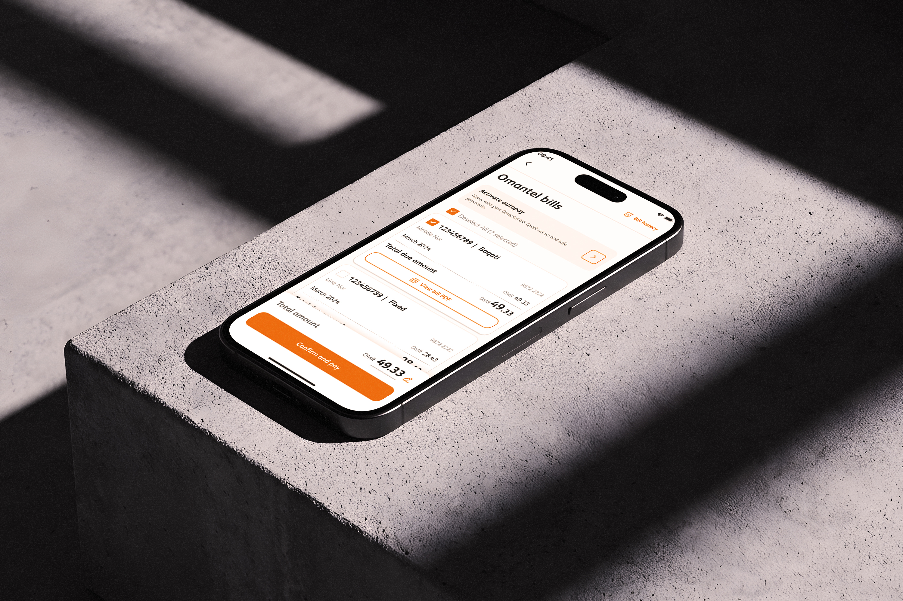
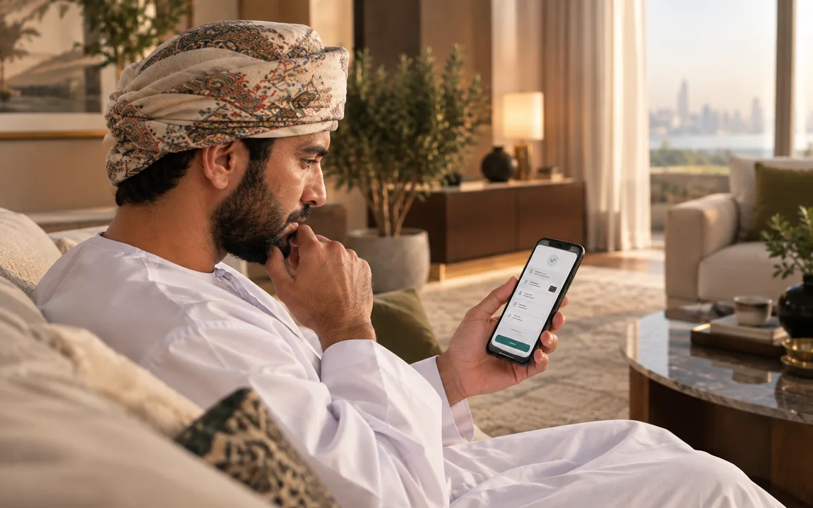
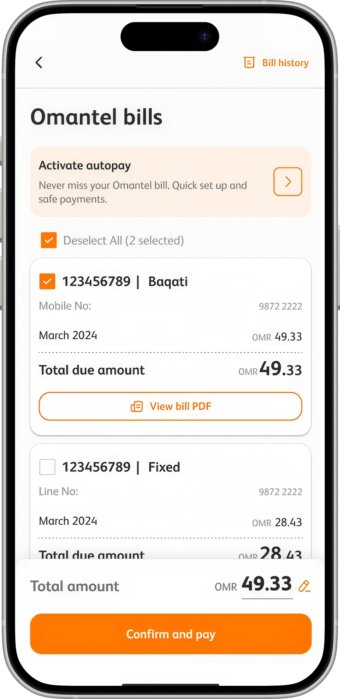

Customers were being asked to pay before they felt confident enough to do so.
Without a clear opportunity to verify the payment, many hesitated or abandoned the transaction altogether.

Omantel | CEP Super App | Act 1
The redesign that became the foundation for Omantel’s Super App.
Bill payment is the highest-frequency, highest-stakes interaction in the telco relationship. It is the moment where trust is either built or broken.
Before we dive into the details, these are some of the main screens in the hands of our users today.


To understand how customers actually interact with billing, we ran usability testing using a think-aloud qualitative method across key Omantel customer segments. We discovered the problem wasn't just usability. It was confidence.
Participants completed real payment tasks while verbalising their thoughts, which let the team identify friction points and mental-model mismatches rather than opinions.
Both groups represent significant portions of the user base and sit at opposite ends of comfort with digital payments.
Without a clear opportunity to verify the payment, many hesitated or abandoned the transaction altogether.

People manage multiple lines by person, not by account. Autopay belonged in settings, not Quick Actions. Every navigation decision had been made for the system, not the user.
Prominent Omanis, the highest-value segment. Status labels were incomprehensible, security cues absent, OTP-less Quick Pay felt like a vulnerability. Every friction point here is a call centre cost and a churn risk.
Every design decision had to satisfy four principles tied directly to trust, adoption, and retention outcomes.
Users must understand a charge before committing to it. Every payment interaction increases transparency before action.
Information architecture follows user mental models, grouping bills by phone number rather than internal account structures.
Giving users control over payment behaviour reduces anxiety and increases adoption.
The platform should surface risks early, helping users act before problems become support calls.
The bill, before the ask

1 2 3A mobile bill and a home line sit in one list under one total, instead of being paid one at a time.
Each bill shows the month, the amount, and a copy of the invoice. You confirm after that, not before.
The amount adds up as you tick bills, and you can still change it at the last step.
Bills are now grouped by the identifier users actually know: their phone number. The hierarchy shows what you owe, why, and when, in that order. No codes, no backend jargon surfacing in the UI.
This required a data architecture change. Engineering pushed back. I drove the conversation with user evidence, not design preference, and it shipped.
Phone number navigationJTBD mappingEngineering alignment


Autopay adoption was the highest-value retention lever. But it required trust the previous flow hadn't earned. Users who feel exposed don't opt in, they call the contact centre instead.
The redesign gives each phone number its own toggle, spending cap and schedule. Control was the trust mechanism. When people feel in control, they commit.
Per-number autopaySpending capsFlexible scheduling
Pre-suspension warnings and minimum payment alerts now surface before a crisis, not during one. The moment of panic becomes a moment of action. The user acts early. The contact centre stays quiet.
Proactive design isn't a feature, it's a signal that the platform understands what the user needs before they know they need it. That's the distance between a utility app and a trusted platform.
Proactive alertsMinimum paymentCall deflection


The billing experience was rebuilt across three layers, discoverability architecture, billing information architecture, and the payment interaction model.
Billing became accessible wherever users naturally expected it:
Bills were restructured around phone numbers rather than account numbers. Information hierarchy prioritised:
This removed a major cognitive barrier for multi-line customers.
Quick Pay was redesigned to balance speed with confidence. Key additions:
Autopay became configurable per phone number. Users can:
Control became the mechanism for trust and adoption.
A single payment framework was established across services. Included:
This created a foundation reusable across future super app services.
Note: screen counts based on flow analysis of Figma journeys. Feature count reflects new sections added vs. existing.
bill payment entry points introduced across the super app surface: home, settings, post-plan, profile, account.
design quality benchmark set at CCO level. Every screen reviewed against this bar before handoff.
design decisions, each traceable to a specific user research finding. Nothing shipped on assumption.
Strategic oversight and design leadership across three interconnected workstreams, simultaneously.
This wasn't a payment flow redesign. It was proof that in a super app, every billing moment is a trust moment.
Trust isn't a UX metric. It's the foundation of retention. This redesign established the experience standard for future payment journeys across the super app.